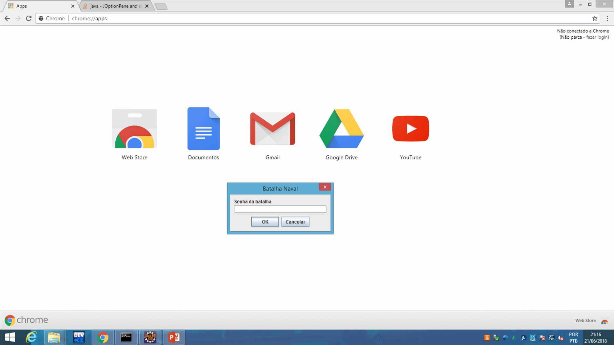
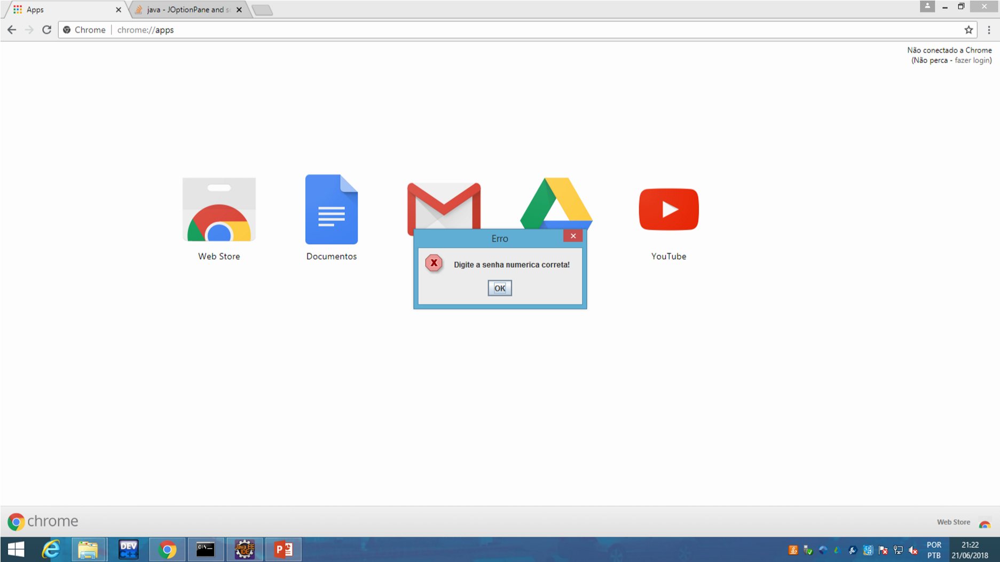
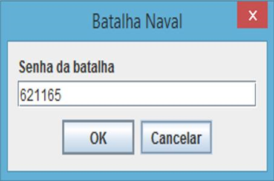
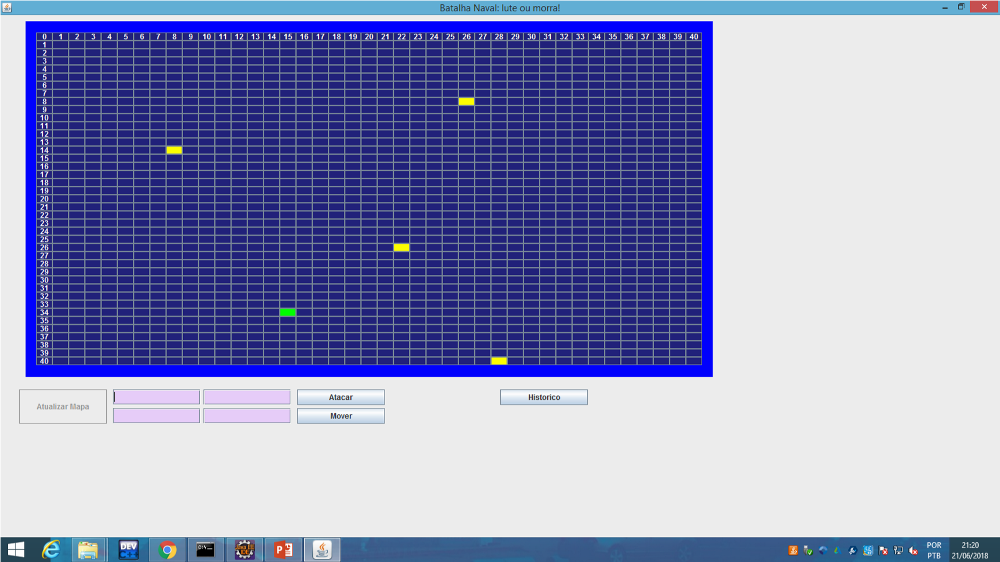
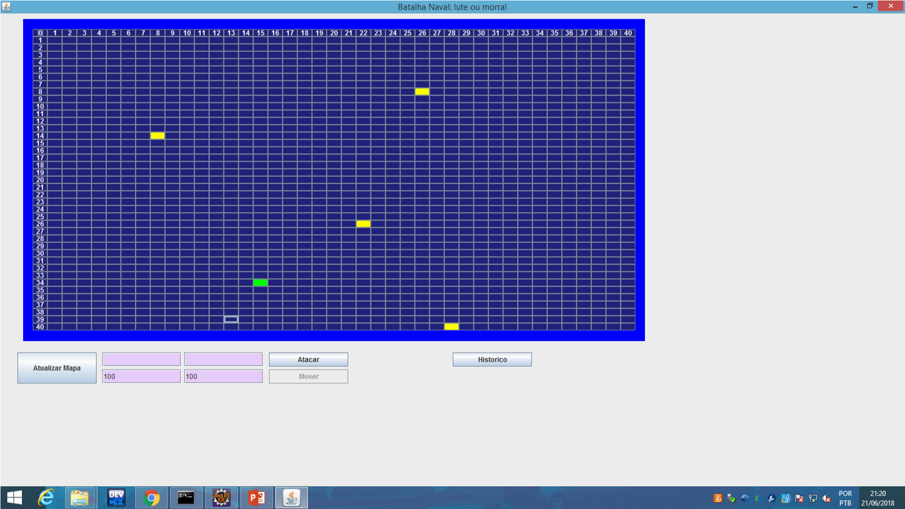
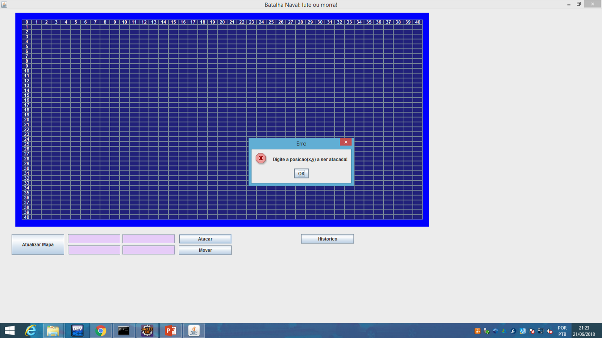
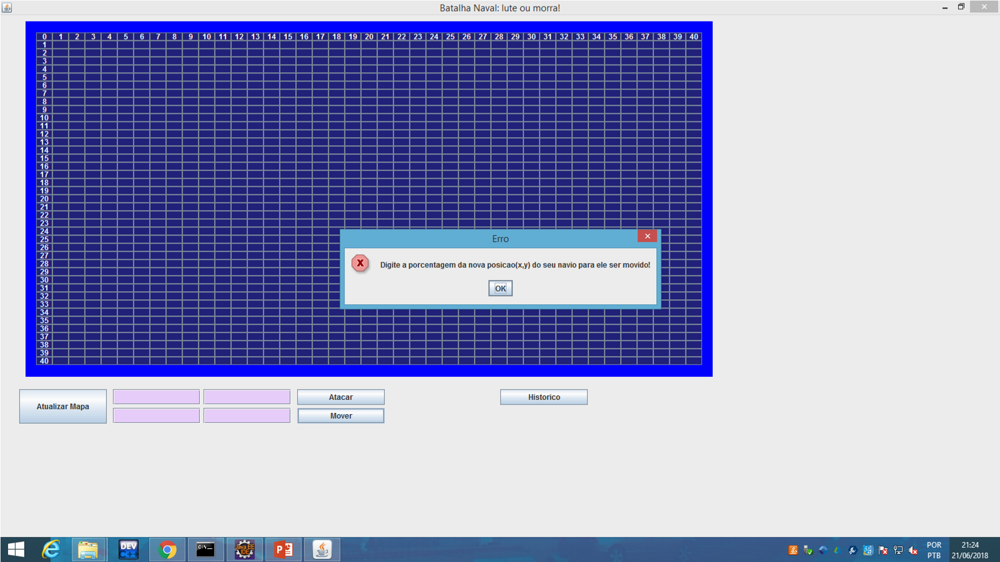
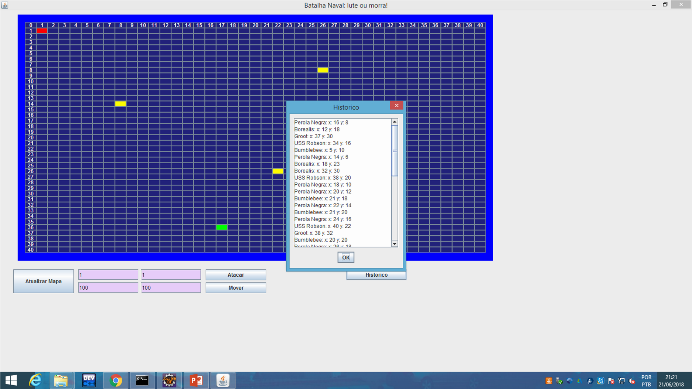

Batalha Naval
O Batalha Naval que foi feito, é uma versão com regras diferenciadas do jogo. Funcionando pelo protocolo IP, o objetivo do jogo é ser o último sobrevivente.
Armazenamento
O software armazena informações atráves de um banco de dados interno. Foi usado o PostgreSQL, pois sua estrutura facilita seu uso.
Desenvolvimento
A línguagem usada para desenvolver foi Java, pois contém bibliotecas nativas de interface gráfica. A IDE utilizada foi o Eclipse.
Interface
1 - Primeiramente é apresentada uma tela, onde o programa pede a senha do navio:
2 - Se for clicado no botão OK e não for inserido nada na caixa de texto ou for digitado a senha errada,
ou for inserido caracteres não numéricos, o programa informará um erro:
3 - Se for inserido a senha numérica correta, o programa irá redirecionar a tela principal do jogo:
Na tela, estão os botões Atualizar Mapa, Atacar, Mover, e Histórico e quatro campos de textos
para serem inseridos valores e o painel que mostra as posições dos navios no mar:
4 - Ao clicar no botão Atualizar Mapa, é mostrado as posições dos navios, através dos botões
do painel. Logo aṕos, o botão fica indisponível por 5 segundos:
Ele seleciona as posições através do comando “select * from jogo;”.
5 - Ao serem inseridos valores numéricos nos dois campos de texto inferiores, e ao clicar no
botão Mover, o jogo envia ao banco de dados remoto, os valores de aceleração de movimento
dos dois campos de texto:
6 - Para confirmar a nova posição, deve ser clicado no botão Atualizar Mapa:
7 - Ao serem inseridos dois valores numéricos nos campos superiores, e ao clicar no botão
Atacar, o jogo envia ao banco de dados remoto, os valores da posição onde se deseja atacar:
8 -Se for clicado no botão Atacar e os dois campos de textos superiores não forem preenchidos, o jogo abre uma janela indicando o erro:
9 - Se for clicado no botão Mover e os dois campos inferiores não forem preenchidos, o jogo abre uma janela indicando o erro:
10 - O botão historico abre uma janela, que exibe na tela os valores da tabela local “historico”:
